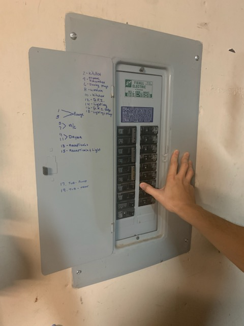

The first step is to locate the breaker box, most of the time it will be located in the garage. Once that is located, turn off the breaker to be safe. Return to the wall switch to confirm that the power has been turned off.

Step 2: Remove Plastic Cover Plate
The second step is to use a flathead screw driver to remove the 2 screws which are holding the plastic cover plate in place.